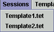

The main menu bar in Tetrad lets you manage Tetrad sessions, lets you perform some editing operations on the current session, and gives you access to the help functionality (this), among other things. It looks like this:

The function of each item in each menu is described below. If you were looking for help for popup menus for boxes, see Popup Menus.
The File Menu

Here's what each item does in the File menu.
- New Session - creates a new, empty Tetrad session. Your previous session is still available-just go to the Session menu--see below.
- Open Session - prompts you for a saved Tetrad session file (with suffice ".tet")
and opens it.
- Close Session - closes your main workbench and leaves you in Tetrad or in a stored session in memory. If there are no sessions you get a blank Tetrad screen with no workbench You can't do anything in the program until another session is opened or a new one is created.
- Save Session - saves all of your work, coltData, the whole thing, to a file (suffix ".tet") so that you can call it back up later. You are asked to give the session a name if you haven't done so already.
- Save Session As - Does the same thing as Save Session, but always asks you for a file name.
- Session Version - Gives version information for the current session. See Tetrad Versioning.
- Save Screenshot - Saves a screenshog (PNG format) of the entire Tetrad Session, in case you don't want to fool around with Photoshop or GIMP.
- Save Session Graph Image - Saves an image of just the session graph in the white workspace are with the boxes and arrow in it. Leaves out the menubar and toolbar. This is useful if your session flowchart is larger than your screen.
- Exit - Gets you out of Tetrad the polite way.
The Edit Menu

Here's what each item does in the Edit Menu.
- Cut - Cuts out any selected boxes from the workbench (together with any edges between them) and allows you to paste them. For advise on how to select groups of boxes, see Selecting Groups of Nodes.
- Copy - Same as Cut, but leaves the original nodes in the session.
- Paste - Paste the cut or copied boxes slightly down and to the right of the original ones, either in the current session or in some other session. Multiple pastes are supported; if you paste multiple times, new copies appear down and to the right of the originally selected boxes.
The Session Menu

Tetrad can keep multiple sessions open at once, but only one
workbench is visible at a time. "Sessions" lists all of your open
sessions and lets you switch to the workbench of whichever session you
want. Your sessions are automatically given a name, e.g., "Untitled1.tet" unless you have saved them with a name.
The Template Menu

In using Tetrad you will put together a sequence of boxes connected by
flowchart arrows. (See How to Build a Session.) Some sequences are so commonly used, that Tetrad will
insert the entire sequence for you--boxes and arrows--in the workbench
all at once. For details, see Using Templates.
The Help Menu

The items listed do the following.
- Tetrad Manual - That's this. You already know about it.
- About Tetrad [version-number] - Shows information about the project in general.
- Warranty - Warranty information displayed as per requirements of the GNU General Public License.
- License - License informatoin displayed as per requirements of the GNU General Public Licence.